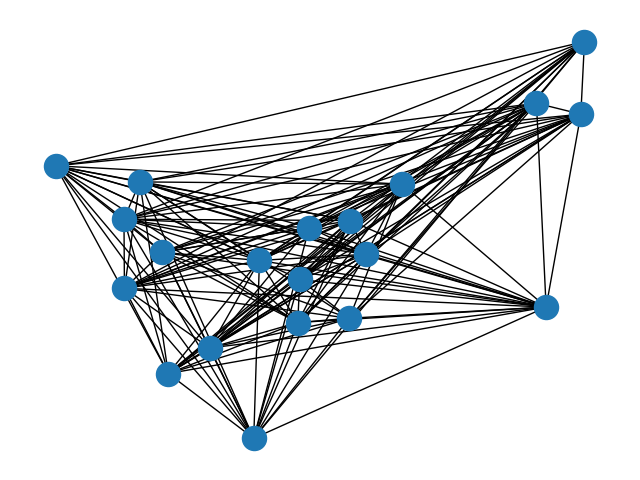

Note
Click here to download the full example code
Antigraph#
Complement graph class for small footprint when working on dense graphs.
This class allows you to add the edges that do not exist in the dense graph. However, when applying algorithms to this complement graph data structure, it behaves as if it were the dense version. So it can be used directly in several NetworkX algorithms.
This subclass has only been tested for k-core, connected_components, and biconnected_components algorithms but might also work for other algorithms.
import matplotlib.pyplot as plt
import networkx as nx
from networkx import Graph
class AntiGraph(Graph):
"""
Class for complement graphs.
The main goal is to be able to work with big and dense graphs with
a low memory footprint.
In this class you add the edges that *do not exist* in the dense graph,
the report methods of the class return the neighbors, the edges and
the degree as if it was the dense graph. Thus it's possible to use
an instance of this class with some of NetworkX functions.
"""
all_edge_dict = {"weight": 1}
def single_edge_dict(self):
return self.all_edge_dict
edge_attr_dict_factory = single_edge_dict
def __getitem__(self, n):
"""Return a dict of neighbors of node n in the dense graph.
Parameters
----------
n : node
A node in the graph.
Returns
-------
adj_dict : dictionary
The adjacency dictionary for nodes connected to n.
"""
return {
node: self.all_edge_dict for node in set(self.adj) - set(self.adj[n]) - {n}
}
def neighbors(self, n):
"""Return an iterator over all neighbors of node n in the
dense graph.
"""
try:
return iter(set(self.adj) - set(self.adj[n]) - {n})
except KeyError as err:
raise nx.NetworkXError(f"The node {n} is not in the graph.") from err
def degree(self, nbunch=None, weight=None):
"""Return an iterator for (node, degree) in the dense graph.
The node degree is the number of edges adjacent to the node.
Parameters
----------
nbunch : iterable container, optional (default=all nodes)
A container of nodes. The container will be iterated
through once.
weight : string or None, optional (default=None)
The edge attribute that holds the numerical value used
as a weight. If None, then each edge has weight 1.
The degree is the sum of the edge weights adjacent to the node.
Returns
-------
nd_iter : iterator
The iterator returns two-tuples of (node, degree).
See Also
--------
degree
Examples
--------
>>> G = nx.path_graph(4) # or DiGraph, MultiGraph, MultiDiGraph, etc
>>> G.degree(0) # node 0 with degree 1
1
>>> list(G.degree([0, 1]))
[(0, 1), (1, 2)]
"""
if nbunch is None:
nodes_nbrs = (
(
n,
{
v: self.all_edge_dict
for v in set(self.adj) - set(self.adj[n]) - {n}
},
)
for n in self.nodes()
)
elif nbunch in self:
nbrs = set(self.nodes()) - set(self.adj[nbunch]) - {nbunch}
return len(nbrs)
else:
nodes_nbrs = (
(
n,
{
v: self.all_edge_dict
for v in set(self.nodes()) - set(self.adj[n]) - {n}
},
)
for n in self.nbunch_iter(nbunch)
)
if weight is None:
return ((n, len(nbrs)) for n, nbrs in nodes_nbrs)
else:
# AntiGraph is a ThinGraph so all edges have weight 1
return (
(n, sum((nbrs[nbr].get(weight, 1)) for nbr in nbrs))
for n, nbrs in nodes_nbrs
)
def adjacency(self):
"""Return an iterator of (node, adjacency set) tuples for all nodes
in the dense graph.
This is the fastest way to look at every edge.
For directed graphs, only outgoing adjacencies are included.
Returns
-------
adj_iter : iterator
An iterator of (node, adjacency set) for all nodes in
the graph.
"""
nodes = set(self.adj)
for n, nbrs in self.adj.items():
yield (n, nodes - set(nbrs) - {n})
# Build several pairs of graphs, a regular graph
# and the AntiGraph of it's complement, which behaves
# as if it were the original graph.
Gnp = nx.gnp_random_graph(20, 0.8, seed=42)
Anp = AntiGraph(nx.complement(Gnp))
Gd = nx.davis_southern_women_graph()
Ad = AntiGraph(nx.complement(Gd))
Gk = nx.karate_club_graph()
Ak = AntiGraph(nx.complement(Gk))
pairs = [(Gnp, Anp), (Gd, Ad), (Gk, Ak)]
# test connected components
for G, A in pairs:
gc = [set(c) for c in nx.connected_components(G)]
ac = [set(c) for c in nx.connected_components(A)]
for comp in ac:
assert comp in gc
# test biconnected components
for G, A in pairs:
gc = [set(c) for c in nx.biconnected_components(G)]
ac = [set(c) for c in nx.biconnected_components(A)]
for comp in ac:
assert comp in gc
# test degree
for G, A in pairs:
node = list(G.nodes())[0]
nodes = list(G.nodes())[1:4]
assert G.degree(node) == A.degree(node)
assert sum(d for n, d in G.degree()) == sum(d for n, d in A.degree())
# AntiGraph is a ThinGraph, so all the weights are 1
assert sum(d for n, d in A.degree()) == sum(d for n, d in A.degree(weight="weight"))
assert sum(d for n, d in G.degree(nodes)) == sum(d for n, d in A.degree(nodes))
pos = nx.spring_layout(G, seed=268) # Seed for reproducible layout
nx.draw(Gnp, pos=pos)
plt.show()
Total running time of the script: ( 0 minutes 0.094 seconds)